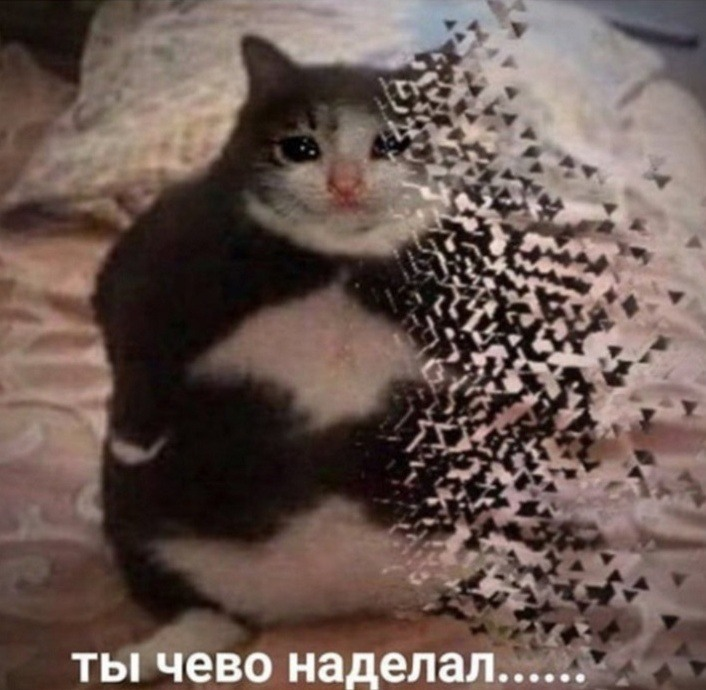

CSS BAYAN
Первая мысль каждого джуна после появления chat GPT

25-летний сеньор при виде 60-летнего джуна на работе
Когда увидел, что на таске с аккордионом нельзя юзать JS
POV
REAL: Ты думал, что справился с таском на 140 баллов. Также ты на следующий день после сабмита
Внучок, ты же у нас программист